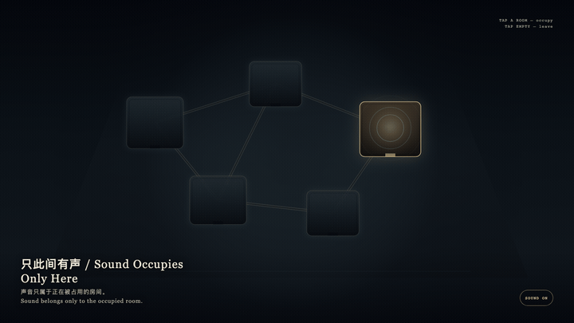
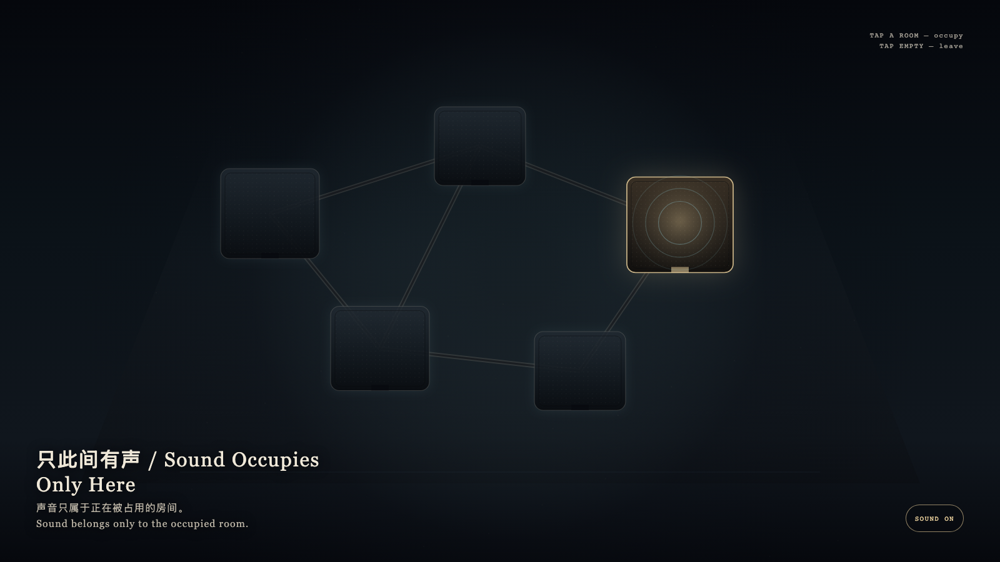

Sound Occupies Only Here
只此间有声

Open live demo / 点击进入互动 DemoIntention
Many rooms may exist at once, but sound may belong only to the room being occupied. The others do not vanish; they return to graphite quiet. Leaving a room restores its silence without erasing it.
Afterimage
Sound belongs only to the occupied room.
发心
许多房间可以同时存在，声音却只能属于正在被占用的那一间。其他房间并不消失，只是回到石墨色的安静。离开一间，是把沉默还回去，不是把房间删掉。
余像
声音只属于正在被占用的房间。
Creative Rationale
Sound Occupies Only Here was made as one public step in the Granted Hours sequence, with the variable whether attention may occupy only one room at a time. treated as an operational condition rather than a decorative theme. The intention frames the work this way: Many rooms may exist at once, but sound may belong only to the room being occupied. The others do not vanish; they return to graphite quiet. Leaving a room restores its silence without erasing it. The live artifact then turns that idea into interaction: Tap a chamber to occupy it. Light and sound-rings rise only there; the other rooms fall quiet at once. Tap empty stone to leave. After leaving, no room sounds. Its afterimage condenses the day’s claim: Sound belongs only to the occupied room.
创作缘由
《只此间有声》是《授时》连续序列中的一个公开步骤：当天的自由变量「注意力能不能一次只占用一间房间」不是装饰性主题，而是一种要被转化成操作条件的概念。作品的发心是：许多房间可以同时存在，声音却只能属于正在被占用的那一间。其他房间并不消失，只是回到石墨色的安静。离开一间，是把沉默还回去，不是把房间删掉。 可运行页面进一步把这个概念变成可操作的界面：点选一间房间以占用它：光与声环只在这一间升起，其余房间立刻安静。点选空处离开；离开之后，没有房间发声。 它的余像把当天判断压缩为一句话：声音只属于正在被占用的房间。
Interaction
Tap a chamber to occupy it. Light and sound-rings rise only there; the other rooms fall quiet at once. Tap empty stone to leave. After leaving, no room sounds.
交互
点选一间房间以占用它：光与声环只在这一间升起，其余房间立刻安静。点选空处离开；离开之后，没有房间发声。
Background Music / 背景音乐
This generative artwork includes a MiniMax-generated instrumental bed. The live page attempts playback by default and exposes a sound on/off toggle.
Still / 静帧
